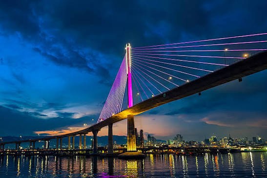
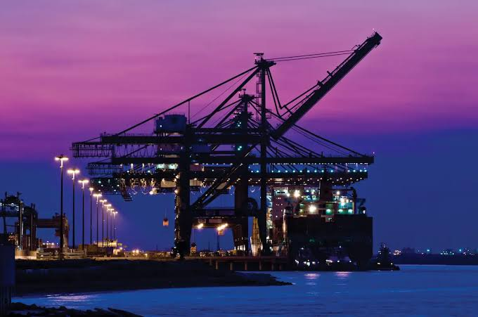
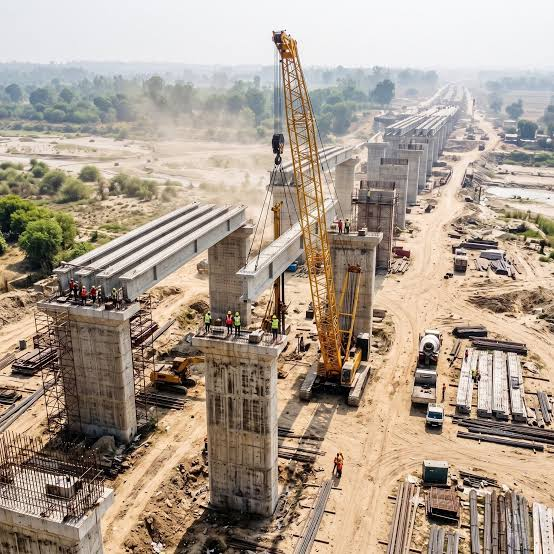

VISAYAS // SEA CROSSING
CCLEX Cable Bridge
8.9-kilometer storm-resilient bridge linking Cebu City and Cordova.
Climate-resilient bridges, expressways, and modern ports connecting Luzon, Visayas, and Mindanao.

8.9-kilometer storm-resilient bridge linking Cebu City and Cordova.

Digitized customs and inter-island cargo hubs reducing supply delays.

Earthquake-engineered elevated highways built to withstand extreme weather.